El juego
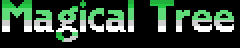
El protagonista sube por un árbol gigante en nueve fases: de rama en rama, por escaleras y lianas, entre manzanas, nidos, puertas del tronco y arañas.
Cada fase es un guion: una lista de entradas de tres bytes —pasos desde la anterior, tipo y columna— que el cartucho sube a la VRAM al empezar y va sacando según se trepa. Un paso son ocho píxeles, una fila de celdas. Lo único que no viene en la lista es el tronco del centro.
Las imágenes de abajo no son capturas ni el cartucho ejecutándose: son el guion de cada fase pasado por el paso del decorado del cartucho, escrito en Python (tools/arbol.py), apilando la fila del medio de la pantalla en cada paso. Cotejadas contra openMSX, subiendo cada fase entera de treinta en treinta pasos: 0 celdas distintas en 104.832.
Lo que trae cada fase
| fase | pasos | ramas | manzanas | arañas | puertas | cielo |
|---|---|---|---|---|---|---|
| 1 | 451 | 98 | 21 | 5 | 10 | cian |
| 2 | 493 | 98 | 15 | 12 | 8 | verde claro |
| 3 | 508 | 103 | 20 | 13 | 12 | amarillo claro |
| 4 | 498 | 103 | 23 | 14 | 12 | gris |
| 5 | 491 | 87 | 27 | 16 | 13 | negro |
| 6 | 515 | 103 | 17 | 12 | 9 | amarillo claro |
| 7 | 549 | 110 | 26 | 19 | 14 | gris |
| 8 | 473 | 83 | 17 | 16 | 10 | negro |
| 9 | 515 | 114 | 26 | 19 | 15 | negro |
La fase 1 empieza en el suelo, junto al río. Las otras ocho empiezan al pie de una sala hueca del tronco, un tramo rojo con dos escaleras arriba y dos abajo. Todas acaban con dos filas rojas y dos ventanas redondas.
El color del cielo es la máscara de la fase, (0xE05D): la de la primera sale de los valores iniciales de 0x51C1, y las demás de la tabla de 0x741F.
Las nueve fases
De abajo arriba, como se suben.
Fase 1
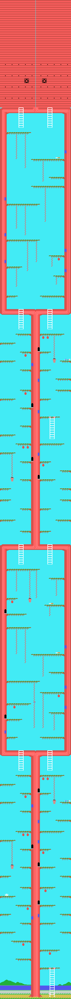
Fase 2
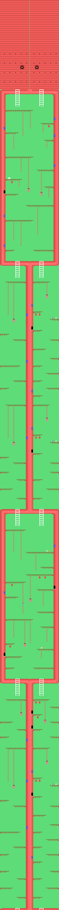
Fase 3
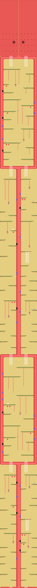
Fase 4
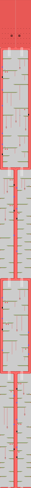
Fase 5
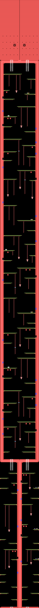
Fase 6
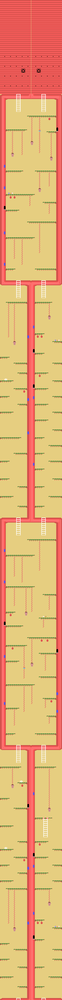
Fase 7
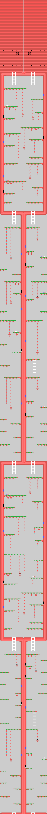
Fase 8
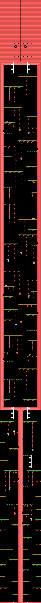
Fase 9
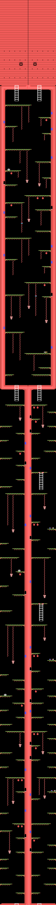
Las pantallas de menú
Montadas desde la ROM y cotejadas contra openMSX a 0 bytes.

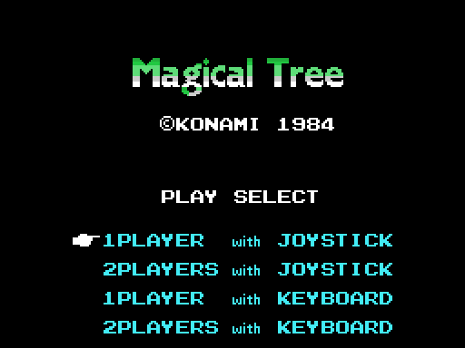